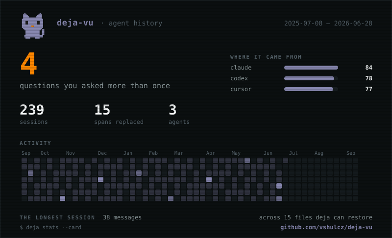

Your agent is about to re-debug something you fixed in March.
deja indexes the sessions your coding agents already wrote to disk — months of history from before you installed it — and hands the right one back before you ask.
curl -fsSL https://raw.githubusercontent.com/vshulcz/deja-vu/main/install.sh | sh
then deja install --auto — ten seconds to install, ten to index, and the next session already knows
you › prepared statement errors behind pgbouncer. again.
claude › recall("prepared statement pgbouncer")
Nov 29 2025 · payments · 20 ms no model, no network
pgx v5.5 changed prepared-statement caching; pgbouncer cannot hold those across connections. we pinned pgx 5.4.3 — revisit when 1.24 ships support.
claude › You hit this in November and pinned pgx 5.4.3. Same cause here — the pin was lost in the last dependency bump.
The difference
Every memory tool starts empty and records forward. deja starts full.
The transcripts are the memory. There is no capture step to remember to run and no stack to stand up — your agents have been writing this to disk all along.
Try it — a live search over a fake history
Type what you half-remember. Get the session where it was solved.
demo corpus: 16 synthetic sessions — press / anywhere to search. The real thing searches your own history, retroactively.
How it works 3 steps
It reads what is already there
Every coding agent writes its sessions to disk. deja parses those stores in place — nothing is copied, nothing is uploaded.
It builds a local index
Credentials are stripped on the way in. About ten seconds for a few gigabytes, and the index is 2% of the corpus.
Your agents recall from it
An MCP tool every agent can call, and a session-start hook where the agent supports one, so it already knows.
Works with 17
Solve it in Codex. Claude remembers.
What a year of it looks like
Your own work, wrapped.

deja stats --card draws it in your terminal; give it a filename and it writes the SVG for a profile README.
Private by construction 0 accounts
Nothing leaves your machine unless you ask it to.
Indexing and search are local. Keys, tokens and private key blocks are stripped at index time, so the cache is safe to keep. No account, no telemetry — even this page keeps what it remembers about you in your own browser.
Your history is already on this machine.
ten seconds to install, about ten to index — then the next session already knows
curl -fsSL https://raw.githubusercontent.com/vshulcz/deja-vu/main/install.sh | sh